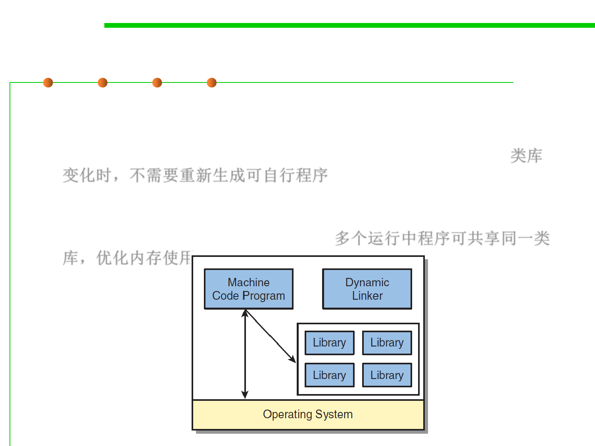

Dynamic linking
1.1 Multi-Dimensional Views of Software Construction
▪ Advantages:
– It’s possible to upgrade to a newer version of a library (adding features or
fixing bugs), without needing to re-create the executable program. 类库
变化时，不需要重新生成可自行程序
– Many operating systems can optimize their memory usage by loading
only a single copy of the library into memory, yet sharing it with other
programs that require that same library. 多个运行中程序可共享同一类
库，优化内存使用